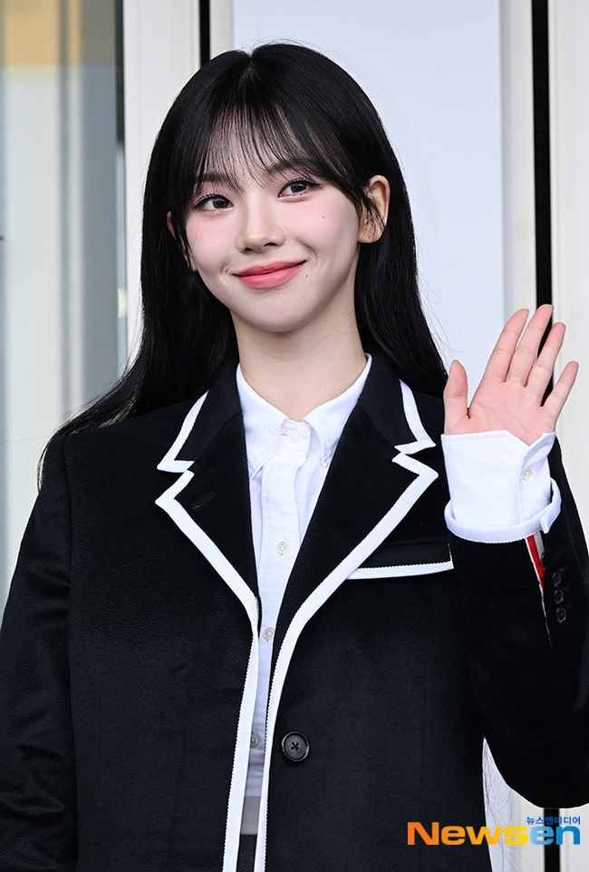
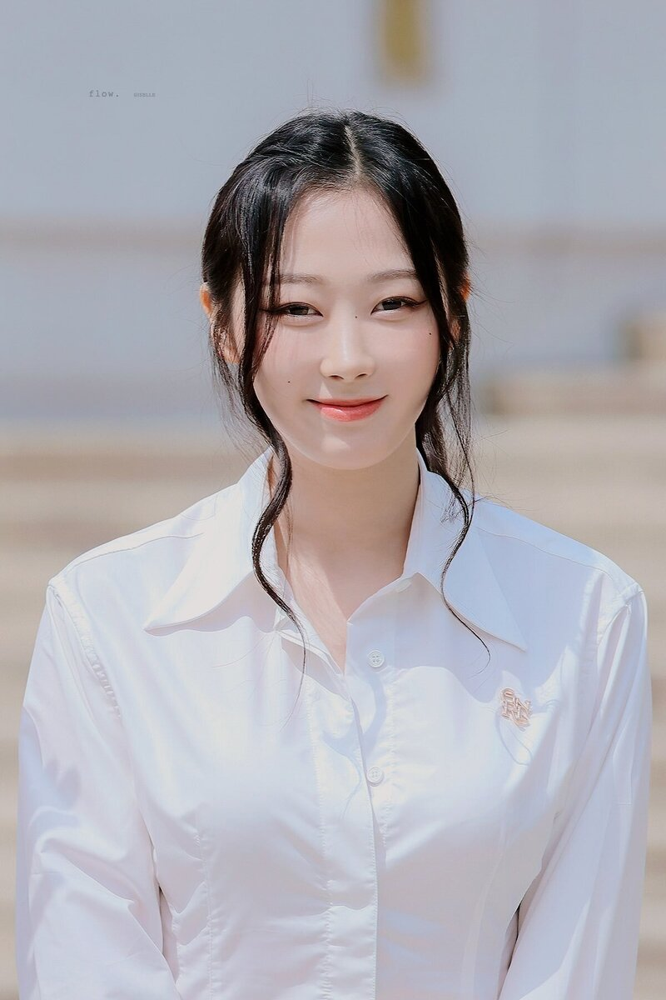
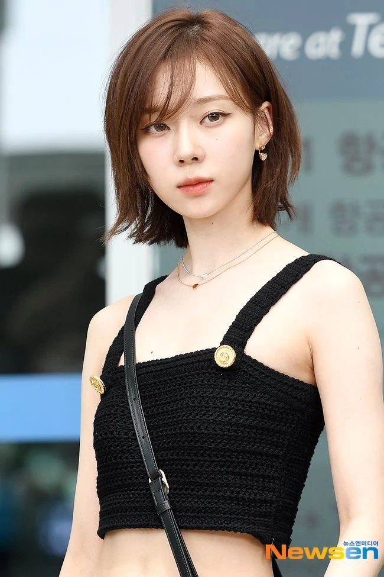
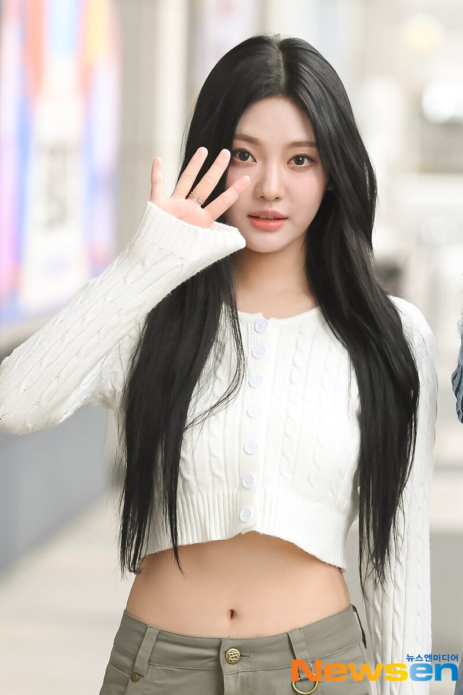

Members of Aespa
Aespa is a relatively new group that debuted in 2020. They have four members all in their early 20s. Similar to many other kpop groups, Aespa consists of members from countries other than South Korea.
Karina
Yu JiMin, stage name Karina, is the leader of the group. Born on April 11, 2000, she joined the company and started training to become a singer at 16 years old. She is known for being the "face of the group," or the most recognizable member.
Giselle
Uchinaga Aeri, stage name Giselle, is one of the rappers of the group. She is also one of the foreign members of the group as she is half Japanese and half Korean and can speak both languages. She used to attend an international school in Tokyo and is also fluent in English. Her birthday is October 30, 2000 and she trained for less than a year with the company before debut.
Winter
Kim MinJeong, stage name Winter, is one of the vocalists of the group. Like Karina, she is known for her visuals and her singing ability. Her birthday is January 1, 2001 and was a trainee for four years.
NingNing
Ning Yizhuo, stage name NingNing, is one of the main singers of the group and the youngest member. She was born on October 23, 2002. She is one of the two foreign members of the group as she is Chinese. She started training at 13 and debuted with the group five years later.
